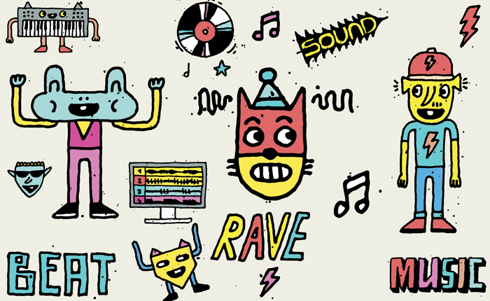
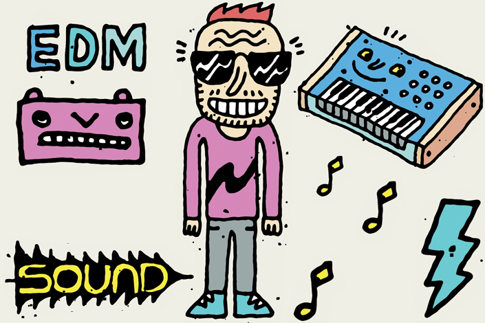

How to Talk to Your Kids About Euphoric Trance
{kind=link}

Trance has recently found itself a new spiritual home. When tickets swiftly sold out within hours last year for the debut of the all-trance Dreamstate festival in Los Angeles, it was a milestone for both the US trance scene and the global #trancefamily community.
However, this extends well beyond just one festival, as evidenced by the number of European trance DJs defecting to the US. “Probably 75 percent of my gigs are here in the US,” Irish expat Simon Patterson told Beatport from his adopted hometown of Miami last year.
“The big cities like L.A., New York and Toronto are always going to be at the forefront, but there are places in the middle of America that are equally good.”
This past weekend saw Dreamstate return to L.A. for its sophomore annual party. If it was your first time reaching for those lasers and cracking those glowsticks—like the #trancefamily has been doing for more than 20 years now—it’s time to settle in for a history lesson.
The euphoric side of club trance, which has been filling the superclubs and stadiums since the late ‘90s, has always inspired strong emotions: loved like a firstborn child by its #trancefamily enthusiasts; reviled by “underground” purists for embodying the disposable side of dance culture; dismissed as bereft of artistic integrity; and yet responsible for countless transcendental dancefloor moments that will never be forgotten.
The term “trance” itself is a sticky one, having gone through so many mutations and variations over its decades-long lifespan. For the sake of simplicity, the trance discussed here is of the “euphoric” variety—the kind you’d hear at Dreamstate parties, key international festivals like Transmission, or Armin van Buuren’s global A State of Trance tours. Besides, the broader story of euphoric trance comprises an incredibly diverse spectrum of sounds and is a world all unto itself.
The history of trance is drawn from a tangle of different influences, traced back largely to a musical movement that blossomed in Germany—specifically its western city of Frankfurt—developing alongside the various other factions of dance culture throughout the ‘90s. One of its early figureheads was actually the flamboyant Sven Vath, in the years before he became a don of techno. Concurrently, over in the UK, Platipus Records was easily one of the most influential record labels throughout that decade that helped defined the earlier, deeper sounds of trance (its more “authentic” roots that purists have oft yearned for a return to).
Meanwhile, a fresh-faced British DJ by the name of Paul Oakenfold had paid a visit to the pristine Goa beaches on the west coast of India, where he soaked up the region’s own distinct trance sounds. He’d never be the same again, returning home to fuse it with his own European touch.
However, the euphoric brand of trance that eventually crystalized later in the ‘90s (for better or worse, depending on your feelings for the genre)—with its emphasis on beautiful harmonies, the ethereal breakdowns, and those driving buildups—owes an invaluable debt to the Dutch. Much came from a small crew of young hopefuls who used to gather in a Rotterdam record store.
“I live in Rotterdam, and we have this record store here called Basic Beat,” says Ferry Corsten, one of the true survivors of euphoric trance. He performed under his revived Gouryella alias at Dreamstate this past weekend. What many young ravers might not know is that the Gouryella project actually started its life in this record shop 20 or so years ago, as a team effort.
“There was a fellow who worked there in the late ‘90s, and his name was Tiësto,” Corsten laughs. “He was kind of the guy who understood exactly what kind of records I was looking for. I was after this really epic, melodic stuff, which there wasn’t really a lot of at the time.”
The pair would both eventually be placed at the center of the euphoric trance movement when it took over the world in 1999, the “golden year of trance.”
“It was a few years before all those big trance records in ‘99, and there was this whole movement that had come out of Frankfurt in Germany that was considered the first real trance—Sven Väth was even part of it. I was looking for that particular sound, and Tijs [Verwest, aka Tiësto] knew how to pick out those exact records from the shipment that came in and say, ‘Hey Ferry, I think you’ll like this, this, this and this.’ The store was more known for a house and techno clientele, though I was one of the few people who came looking specifically for that music. Because of that, Tijs and I clicked instantly, music-wise.
“He was already DJing a lot in Holland, and I’d started producing. There was a moment when we were all hanging out there. Tiësto was there and working in the record store; the guys from Rank 1 were always there. We would always hang there on a Friday night and buy new records.
“I came in with a DAT tape at some point, playing my new track ‘Out of the Blue’ to those guys in the record store. Soon after that, Tijs and I decided to do something together… That’s how we made the original ‘Gouryella.’ It was all within a year or two when that whole sound just exploded. Along with ‘Out of the Blue’ and ‘Gouryella,’ there was Paul van Dyk’s ‘For an Angel,’ Thrillseekers’ ‘Synaesthesia,’ Armin van Buuren’s ‘Communication,’ and Rank 1’s ‘Airwave.’ It was that year that really set the tone for a lot that came after that.
System F “Out of the Blue”
Paul van Dyk “For an Angel”
Thrillseekers “Synaesthesia”
Armin van Buuren “Communication”
Rank 1 “Airwave”
Anyone who was there to experience that first amazing, explosive wave of euphoric trance during will tell you it was something that will never be forgotten. Much of this fevered excitement revolved around a certain iconic nightclub in the English city of Sheffield, which had selected a rather recognizable lion as its logo. Gatecrasher launched a franchise that would take over the world, selling a ridiculous number of mix compilations in the process and growing to become the UK’s spiritual home of trance. Thump recently revisited the seminal phenomenon in an extended feature.
“You would’ve had to come through the ‘90s with your eyes shut and a pair of earplugs on to have not been aware of the iconic Gatecrasher,” Thump aptly observed.
“What started off as an ad hoc club night became a brand so big it spawned 26 albums, played sold-out venues around the world, and hosted a millennium party that saw 25,000 ravers descend on its ‘spiritual home’ of Sheffield to welcome in the noughties. Gatecrasher’s roaring golden lion was once the emblem of the trance generation.”
The club’s obsessive regulars pushed the colorful PLUR aesthetics of early rave to the absolute max, engendering a sense of community that not only lives on in the #trancefamily to this day, but also arguably the wider EDM scene in the US, which boasts a somewhat similar fashion sense.
“It was all about how you wore clothes, not what you wore. That freedom resulted in ‘Crasher Kids,’ a group who were hell-bent on dragging rave fashion into the new century: neon trousers, dog collars, hair twisted with Day-Glo paint, fluorescent bracelets, goggles, fluffy backpacks, and foam letters from the Woolworths kids’ department glued to your chest.”
Gatecrasher’s Red and Wet compilations from ‘99 both function as perfect time capsules for the era, while that year’s biggest anthems helped launch the careers of some of its most enduring stars. Ferry Corsten penned “Out of the Blue,” while a rising star from formerly communist Germany—Paul van Dyk—consolidated his reputation with the emotional “For an Angel.” An extremely young Armin van Buuren secured his place in history with “Communication,” while Rank 1 essentially established the template for the euphoric Dutch sound with “Airwave” (and remains Armin van Buuren’s partner in the studio to this day).
{kind=link}

However, this early explosion of euphoric energy was accompanied by a GFC-style crash that followed immediately afterward, with superclub culture dying as quickly as it began and dance culture retreating to the underground with its tail between its legs. Trance was left sullied with a questionable reputation, desperately trying to recapture those euphoric highs.
According to the haters, trance is a genre dominated by cheesy female vocals, formulaic breakdowns, and generic buildups. Consider this infamous quote from techno stalwart Dave Clarke: “I think all trance DJs deep down are embarrassed by what they play. They take it on the chin! They know deep down that they’re playing watered-down techno.”
It’s a common perception held by many outside the scene, and trance has been the resident whipping boy of dance music longer than most clubbers can remember (only recently superseded by mainstage EDM). Paul van Dyk returned as one of the headline DJs for Dreamstate this past weekend, but even he had a strained relationship with trance for many years. “I’m not a trance DJ” was a common refrain you’d hear repeated in countless interviews.
If an endless repetition for formula was the problem, there were still quality tunes to be found, even when trance was deep in its post-2001 dead zone, with pioneers like M.I.K.E and Marco V slyly working to inject a techno influence into the sound (what eventually came to be known as “tech trance”). Corsten was dropping electro bombs out of left field, like “Punk” and “Rock Your Body, Rock,” while a new wave of big-league hopefuls like Armin van Buuren and Above & Beyond were taking things deeper and cultivating the progressive side of popular club trance.
Ferry Corsten “Punk”
Ferry Corsten “Rock Your Body, Rock”
These developments crystallized in two massive records in 2007: Rank 1 and Alex M.O.R.P.H.’s “Life Less Ordinary” and Wippenberg’s remix of “Needs to Feel,” both of which deceptively lulled the listener into a false sense of security via a traditional euphoric breakdown, before slamming them in the face with a chunky electro bassline after the drop. After that, the doors were blown open, and trance experienced a true renaissance year in 2008.
Rank 1 and Alex M.O.R.P.H. “Life Less Ordinary”
Super8 & Tab ft. Ben Lost “Needs to Feel” (Wippenberg Remix)
Trance’s clean-cut new mascot, Armin van Buuren, had just taken the #1 spot in the DJ Mag Top 100 poll for the first time, reflecting how much demand was still there, but this time the interest was warranted—there’d been an explosion of amazing sounds right across the spectrum. Corsten reflected in 2008 on the evolution he’d witnessed and how he’d helped pioneer it.
“The sound was just becoming so same-y,” he said. “Everybody was using the same presets, and there was just no adventure anymore. That was really my main reason for starting to experiment with different styles. So, it is really good to see now—especially in the past year and a half—there is some really interesting music coming out… It’s stuff that still belongs in the trance genre, just more open-minded.”
Holland’s Sander van Doorn was another DJ/producer who came to represent the “nu-trance” sound, pushing the genre boundaries to the limit. He dropped the monstrous “Riff,” epitomizing what could be achieved when fusing trance with pumping techno.
Sander van Doorn “Riff”
“There was a big shift a couple of years ago, when a lot of trance producers all of a sudden ‘saw the light’ and tried to combine different genres into a blend,” Sander said in 2009. “Last year was a big peak, with a lot of producers opening their eyes [to the idea] that you can produce a melodic track with a lot of feeling, but maybe at a slower pace. This made trance expand into a lot more interesting style of music, and I think it will keep on progressing.”
The next development in the years to come was an unmistakable gravitation toward groove. Above & Beyond cheekily referred to “Trance 2.0” in 2011 when introducing “the new groove-driven variant of our core sound” in their second Essential Mix.
Above & Beyond BBC Essential Mix 2011
The bigger development, though, was the EDM revolution, which would soon displace trance on the mainstage as the populist genre of choice, with just a few hangers-on like Armin van Buuren and Above & Beyond still headlining festivals. DJs began to distance themselves from the sound—the best example being Tiësto, who defected to the EDM camp.
“I used to be just this gigantic trance DJ, and very isolated in my own world,” he told DJ Mag in 2013. “Since I made the change, though, people thought, ‘Oh, Tiësto has a lot more in him than just that.’ Everyone from Swedish House Mafia to Afrojack to Hardwell—we all became friends after that… If I were still a trance DJ, I’d probably be in the same position some of my colleagues are, that I used to be playing alongside back in the day. They still have their core fans and will sell out venues and gigs, but it feels to me like they’re not that relevant.”
However, while the unstoppable phenomenon of EDM might have posed an existential threat to trance, the two genres arguably remain forever intertwined.
“I’ve always seen EDM as slowed-down trance,” Paul Oakenfold observed prior to his Dreamstate debut last year. “It’s got the same big riffs and big emotional moments.”
Seminal records like Swedish House Mafia’s One indicate EDM was indeed heavily inspired by trance, and on the flip side, much recent trance has drawn heavily on the populist thrills of EDM. And while the trance fraternity may be as international as ever, the future of the genre is, for the moment, firmly placed in the United States, which has undeniably become its new home.
“It’s great to have a concentrated energy for a certain sound,” Insomniac’s Pasquale Rotella told Beatport last year, shortly before the debut of Dreamstate. “Trance is such a vocal, passionate crowd. They’ll stay at the trance stage all night… The industry said that trance was dead for a long time, but the hardcore fans were always front-and-center at the shows.”
Meanwhile, some mainstays are returning to the euphoric trance roots they helped trailblaze all the way back in the late ‘90s—like Corsten and the strategic revival of his Gouryella alias.
“I’ve always loved the musical qualities that make up the Gouryella sound,” Corsten says. “When so much trance is swaying too far to EDM, I want to bring big melodies back to a scene I’ve spent my entire career championing.”